Research Methods (ACID FREE)
Thermal opening method
To get the circuits, you must first extract the chip.
The following tools are required for the subsequent operation:
- Gas torch
- Mask
- Pliers
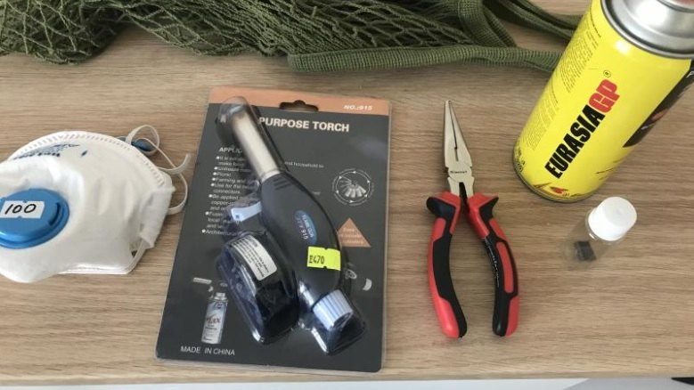
After that, you need to go outside, in a deserted place, clamp a piece of the chip casing with pliers and direct the jet from the gas torch.
⚠️ It is very desirable not to inhale the smoke from the burnt plastic of the chip case. It can cause pulmonary edema and is harmful. If you have ever smelled burnt wires, you can imagine how the fried chip body will smell.
You have to fry it until it is ready.
You can tell if it's ready when instead of black plastic there is only gray ash, like this:
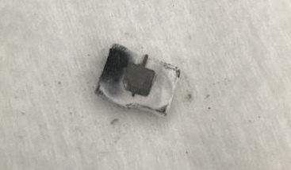
Now all that's left to do is to use a pickaxe to carefully crush the fried case and the chip crystal will fall out of it.
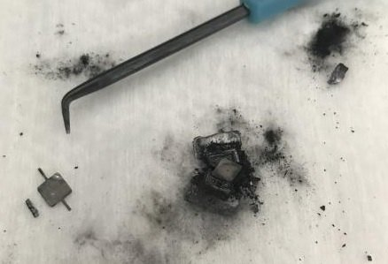
Cleaning
For cleaning dirt and burnt plastic, pure acetone is excellent:
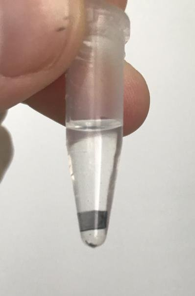
An ordinary wooden toothpick works very well for picking up dirt on the surface. The hardness of the wood is not enough to scratch the top layer of the metal chip in any way, but it does a good job of attacking the plastic and the dirt with acetone.
⚠️ Acetone is recognized as a carcinogen, so use it with caution!
Imaging
Photographing is done with a cheap Chinese metallographic microscope (AmScope):
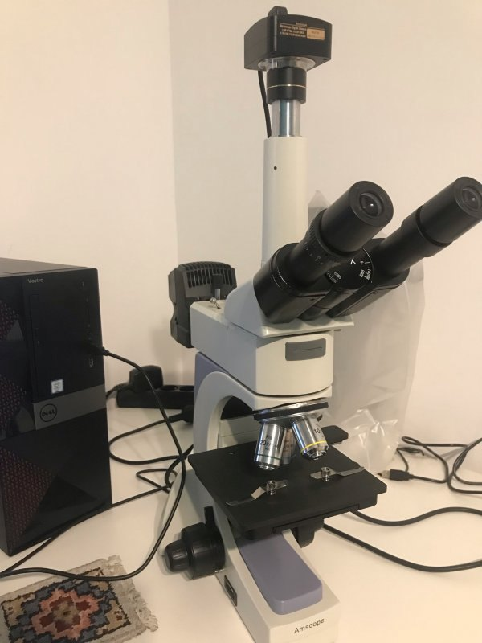
The slides should be photographed evenly and with little overlap, so that it is easier to stitch them together automatically afterwards.
It is very important that the slides go evenly. The best way to do this is to build a motorized actuator for your microscope and a utility for automatically focusing and photographing slides. This will speed up the process tremendously and save you a lot of nerves (sometimes it happens that after 300 slides, you accidentally hit your heel on the table and the chip moves, so you have to redo the whole Run).
⚠️ Try not to use the oculars for long periods of time, but rather look at the picture through the camera. The metallographic microscope is designed in such a way that the focused light from the internal lamp will reflect from the chip surface directly onto the retina and can damage it.
Stitching with Fiji
Suppose we need to stitch such a dataset:
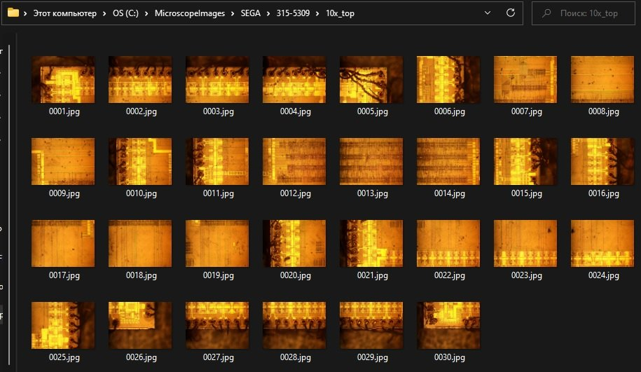
Download 64-bit version: https://imagej.net/software/fiji/
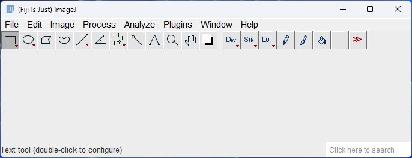
Plugins -> Stitching -> Grid/Collection stitching
Choose the order of the slides. Usually the slides are in a "snake" pattern:
| Snake from top to bottom | Snake from bottom to top |
|---|---|
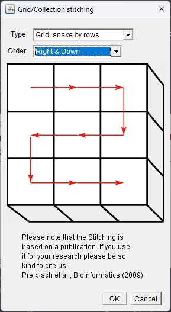 |
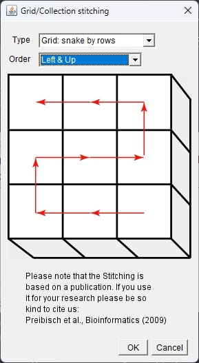 |
Now we have to set it up:
- Number of slides by x (Grid size x)
- Number of rows (Grid size y)
- Tile overlap: are chosen experimentally 5-20% (I use 25 for most cases)
- First file index i: If the name of the slide does not begin with 1
- Directory: slide folder
- File names for tiles: A pattern for the name of the slides. In our case:
{iiii}.jpg(Slide names begin with 0001.jpg and on) - Then there are some more obscure options
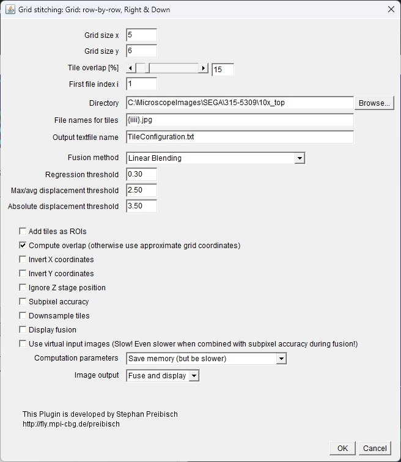
After clicking on Run the program begins to witchcraft:
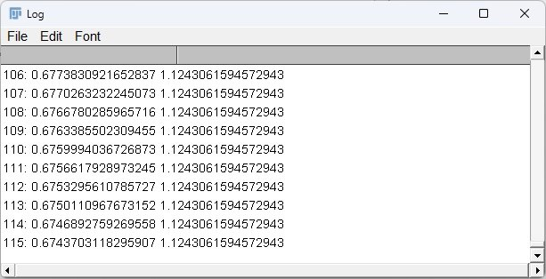
And it will give you a picture:
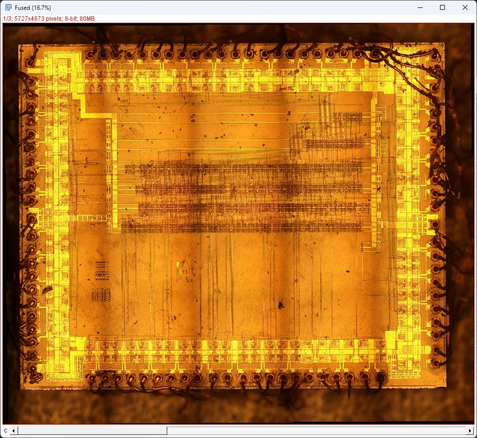
You can save the resulting picture via File -> Save As.
In case you cannot stitch the slides in automatic mode (because of poor or uneven overlap), you can also use the Hugin program, but it requires a large investment of work for stitching.
Lapping
After photographing the top layer, you need to take it off. Polishing is used for this purpose.
The following equipment is used for lapping:
Dremel:
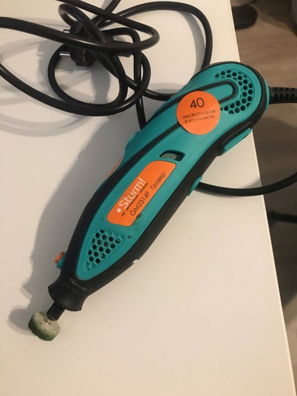
GOI paste:
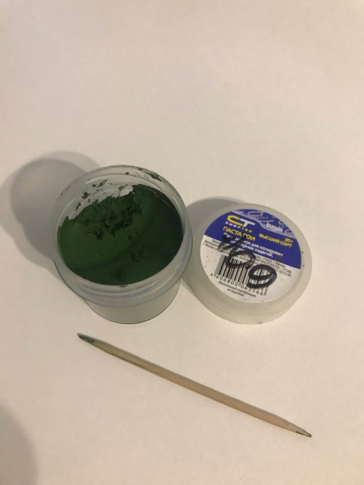
The chip is glued with "Moment" glue to the slide:
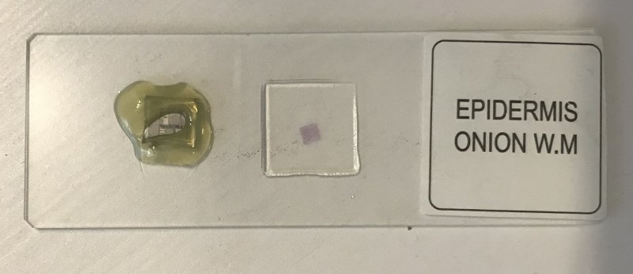
It is better to glue the chip with small "bumps" on the edges, so that it sinks into the glue. This is so that it is supported from the sides when polishing. If this is not done, it will fly right off the glass into the corner.
Do a polishing session (5-10 seconds), take the chip under the microscope and see what happens.
With enough experience, you can learn how to carefully remove layers of 50-100 nm, which is enough to study old microchips.
⚠️ The chromium oxides contained in the GOI paste are mutagens and generally poisonous substances! Also, remember to protect your eyes from getting paste particles or other chip pieces that have bounced off, as this can damage your eyes.
Topology reconstruction
To restore the basic elements, the layers are first drawn in PhotoShop:
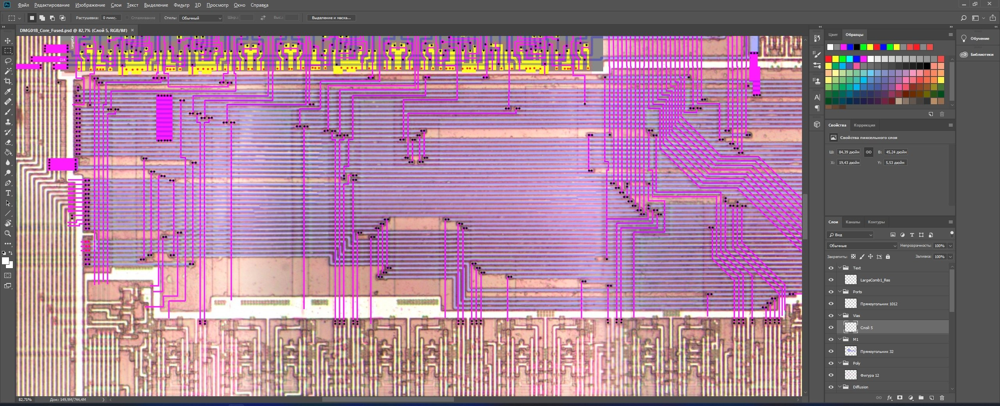
Under the picture of the top layer, "patches" from the different stages of polishing are placed:
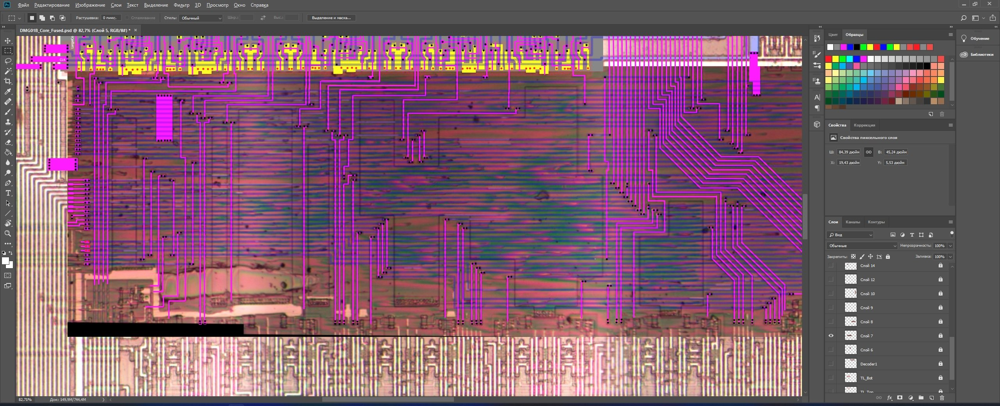
After getting beautiful pictures, we scratch our heads and reconstruct the schematic of the different pieces.
Restoring the netlist
See here.
Conclusions
This way you can safely study microchips, without the use of any acids.